Tepi 2.0
Dynamic island untuk Windows.
Duduk tenang di tepi atas layar, lalu membesar saat ada yang terjadi: lagu, agent coding, tugas, pesan, timer.
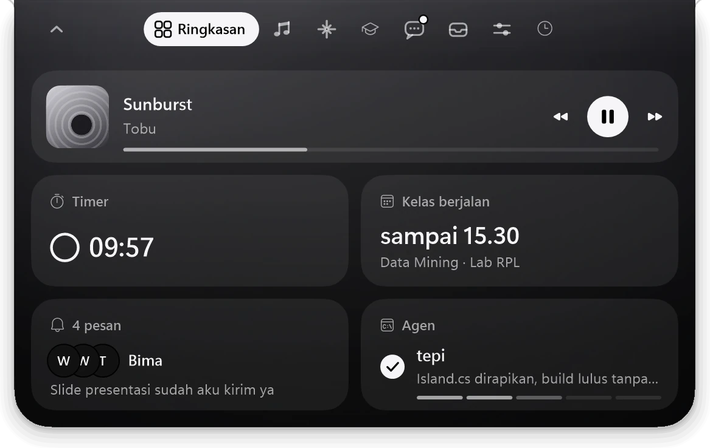
Live activity
Hidup saat dibutuhkan.
Lagu dengan lirik yang menyapu kata demi kata, pesan masuk, agent yang selesai, waktu sholat, volume, dan daya baterai. Island membesar sebentar, lalu kembali tenang.
Panel
Delapan halaman, satu gerakan.
Panel terbuka saat kursor berada di atas island. Scroll memindahkan halaman.
RingkasanYang paling penting, di satu tempat
Mode Mini
Mengecil saat kamu fokus.
Island menyusut jadi sliver kecil yang tembus klik, jadi tab browser di bawahnya tetap bisa diklik. Mode Otomatis menyusut saat browser dimaksimalkan atau setelah island diam semenit. Pemberitahuan penting tetap muncul.
Dua matanya berkedip, mengikuti kursor, dan berekspresi.
Agent coding
Agent coding, selalu kelihatan.
Claude Code, Codex, Gemini CLI, dan Antigravity. Island menampilkan agen yang sedang bekerja, rencana kerjanya langkah demi langkah, dan ringkasan saat selesai.
Contoh permintaan: Claude minta izin mengubah Island.cs, dua baris diganti tiga baris.
Izin dijawab dari island
Permintaan izin dari Claude Code dan Codex tampil utuh dengan diff berwarna. Izinkan, Selalu, atau Tolak tanpa pindah ke terminal.
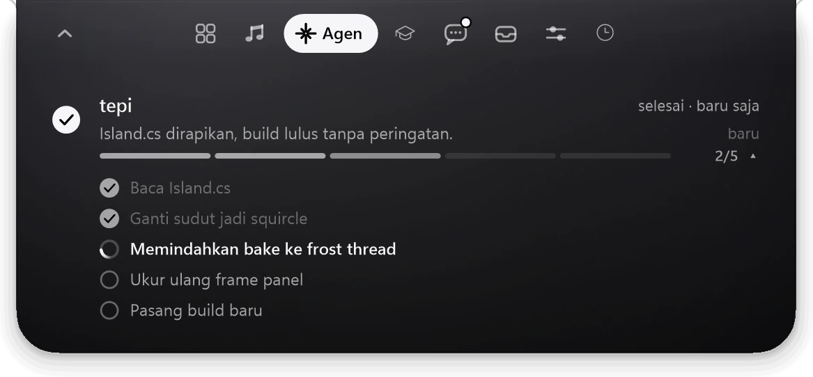
Rencana kerja
TodoWrite, update_plan, dan write_todos tampil sebagai bar bersegmen dan daftar langkah.
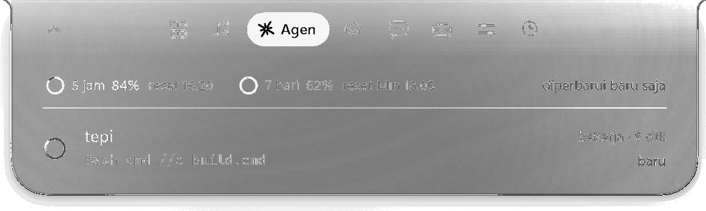
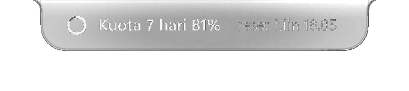
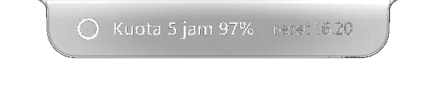
Kuota agent AI
Sisa batas 5 jam dan 7 hari beserta jam reset, dengan peringatan di 80% dan 95%.
Performa
Ringan seperti kapas.
Island tidak menggambar apa pun selama tidak ada yang bergerak. Kaca hanya membaca layar saat latar di belakangnya berubah.
0,22%
CPU saat diam
1.7.0 1,9%
-
2,1%
CPU saat musik diputar
1.7.0 7,0%
-
0,47%
CPU saat panel terbuka
1.7.0 7,3%
-
3–5 MB
Memori saat diam
1.7.0 7–9 MB
672 KB satu file exe, tanpa instalasi.
Membuka dan menutup panel paling lama sekitar 10 ms per frame, di bawah 16,7 ms untuk 60 fps.
Diukur di laptop Intel Core i3-1115G4, 60 detik per kondisi. Persen CPU dihitung terhadap satu core.
Tampilan
Gayamu sendiri.
Liquid Glass yang membaca latar di belakangnya, atau Frost yang lebih berkabut. Tema gelap atau terang, warna aksen, dan paket tema dengan warna, lambang, maskot, serta suara sendiri.
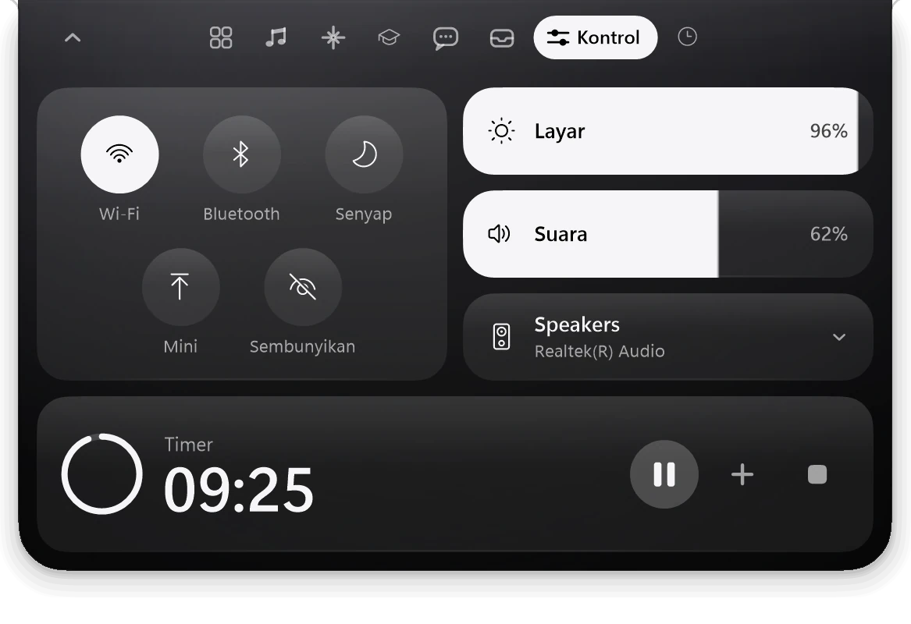
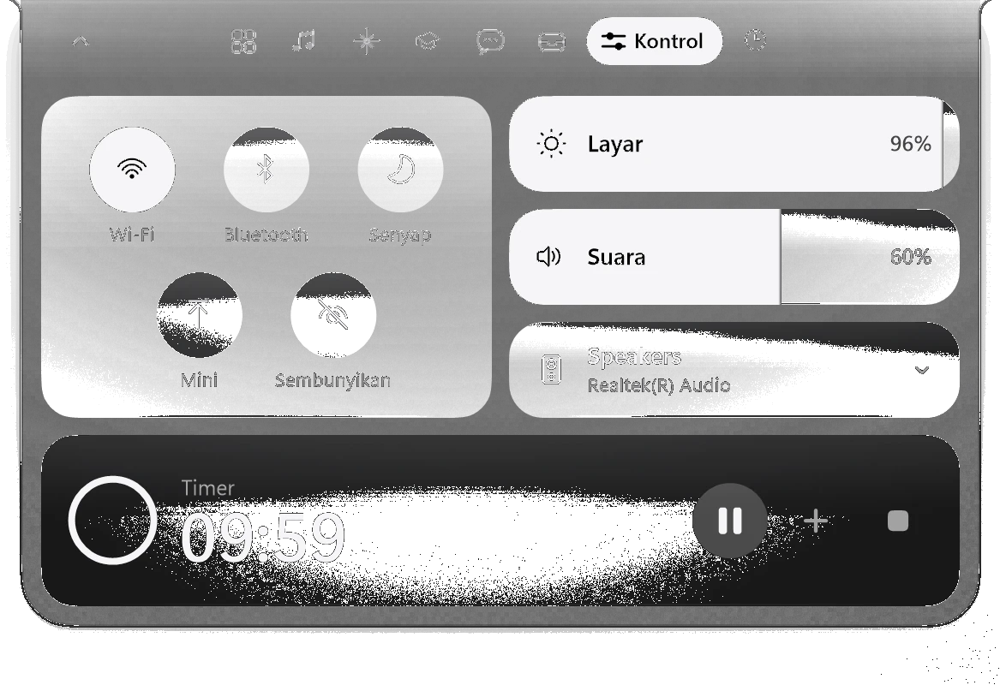
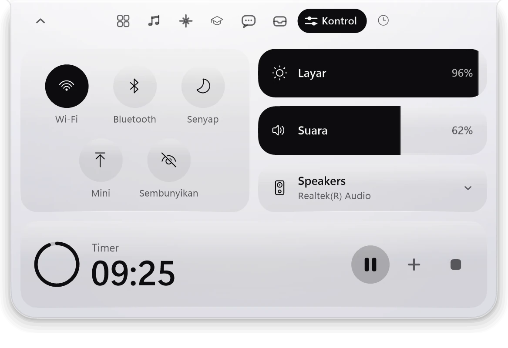
Kaca jernih yang menyesuaikan terang latar
Buat paket tema sendiriJendela
Jendela yang serasi.
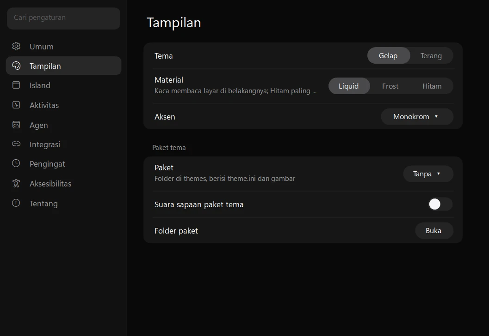
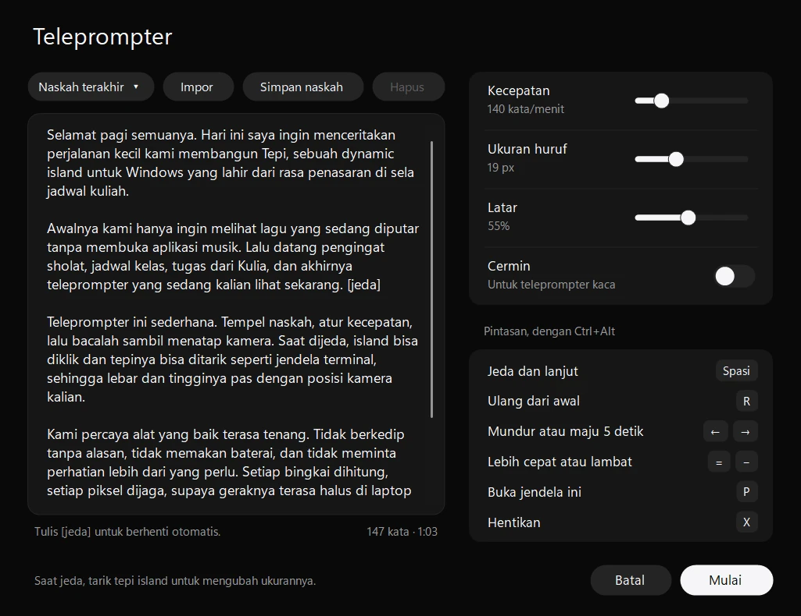
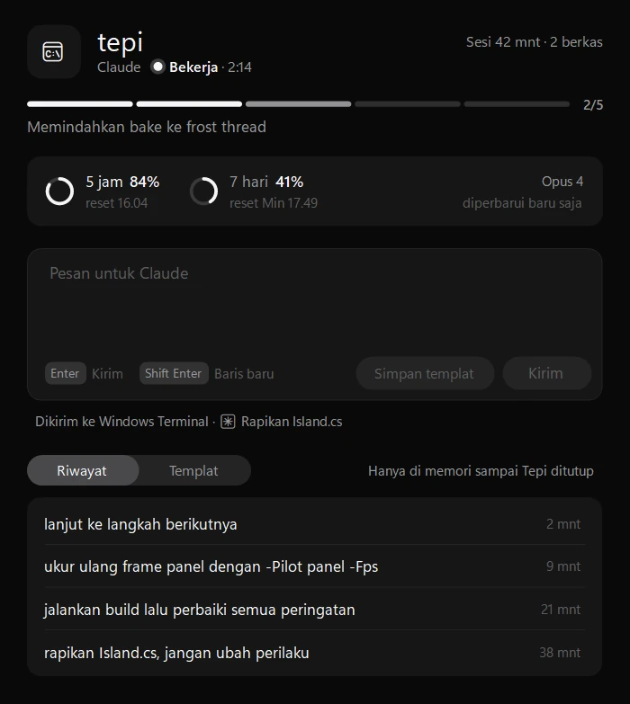
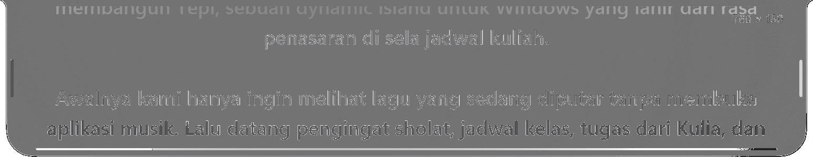
Tepi dalam 45 detik.
Teks di video berbahasa Indonesia.
Dan masih banyak lagi.
- Rak berkasSeret berkas ke island, termasuk ke sliver Mini, lalu seret lagi ke aplikasi lain.
- Timer dan stopwatchFokus 25 atau 50 menit, timer bebas, dan stopwatch dengan putaran.
- Tugas dan jadwalKulia, Notion, Todoist, dan kalender iCal jadi satu, dengan pengingat tenggat.
- PengingatJadwal sholat dihitung di laptop tanpa internet, plus minum, istirahat mata 20-20-20, dan peregangan.
- UnduhanProgres unduhan Chrome, Edge, Firefox, Brave, dan Opera beserta kecepatannya.
- Keyboard penuhCtrl+Alt+I untuk navigasi. Toast, tab, tombol, dan permintaan izin dibacakan Narrator atau NVDA.
- Dua bahasaIndonesia dan Inggris.
- SkripToast dan bilah progres dari skrip apa pun lewat
Tepi.exe --notify.
Privasi dan keamanan
Tetap di laptopmu.
- Layanan luar seperlunyaLRCLIB untuk lirik dan GitHub untuk cek versi, keduanya bisa dimatikan. Kulia, Notion, Todoist, dan kalender hanya dihubungi kalau kamu menghubungkannya.
- Token terenkripsiToken dan tautan rahasia disimpan dengan DPAPI, dikirim hanya lewat HTTPS, dan tidak pernah ditulis ke log.
- Server hook lokalHanya mendengarkan di 127.0.0.1, dengan token acak 48 karakter dan port acak untuk instalasi baru.
- Tidak pernah mengizinkan sendiriKalau Tepi tidak menjawab, agent kembali ke prompt izinnya sendiri.
- Pembaruan terverifikasiExe baru hanya diunduh saat kamu klik Perbarui, lalu SHA-256-nya dicocokkan dengan digest dari GitHub.
- TerbukaKode sumber lengkap di GitHub dengan lisensi MIT.
Satu exe. Gratis.
Unduh untuk WindowsSudah memasang Tepi 2.0? Klik kanan ikon Tepi, lalu Perbarui ke Tepi 2.0.0.2. Berikutnya cukup Pengaturan › Tentang › Cek pembaruan.
Tepi khusus Windows 10 dan 11.
- Syarat
- Windows 10 versi 2004 atau lebih baru, atau Windows 11, 64-bit. .NET Framework 4.8 sudah bawaan Windows.
- SmartScreen
- Exe belum ditandatangani, jadi Windows SmartScreen bisa memunculkan peringatan. Pilih More info, lalu Run anyway.
- SHA-256 Tepi.exe
A7A73BF434967EB2C1671F4D439C94DDFC3F871818F3486D9D7621ACE249B192
Kalau Tepi berguna, traktir kopi lewat QRIS.